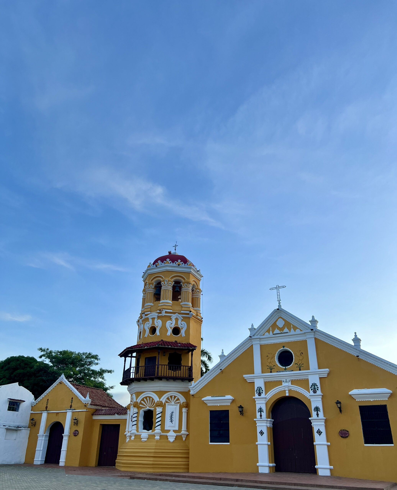
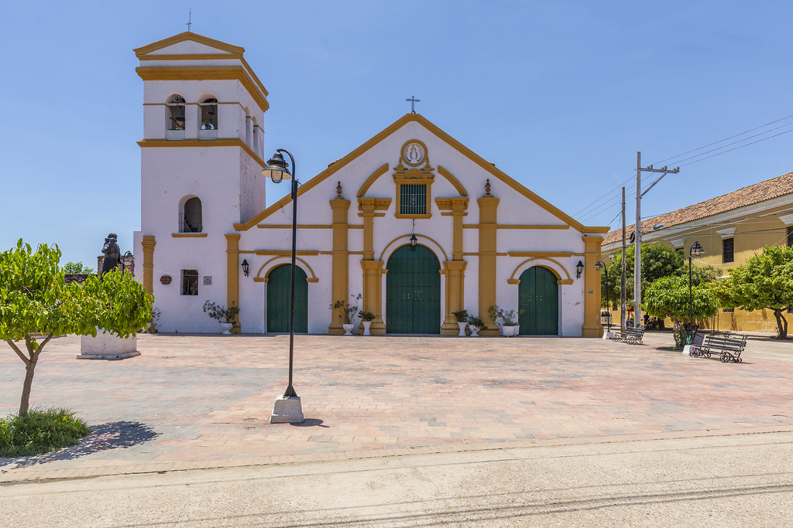
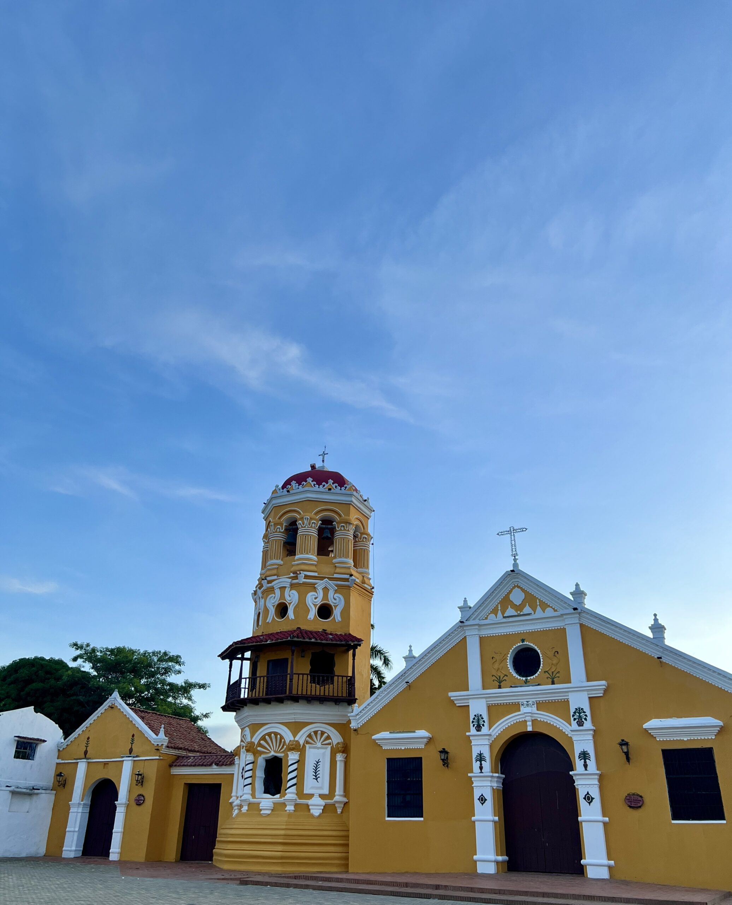
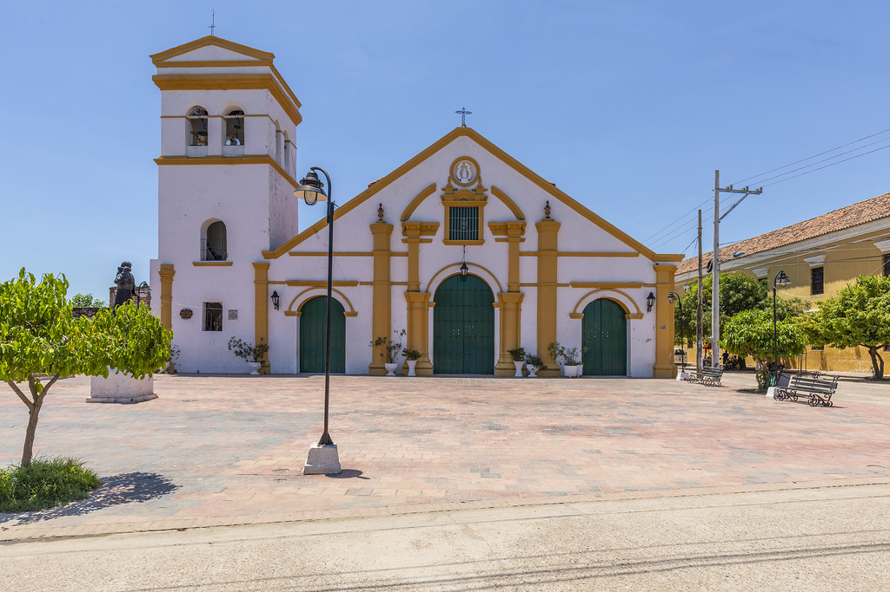

Iglesias de Mompox
Mompox es reconocida por su riqueza arquitectónica y religiosa. Sus iglesias son un reflejo de la tradición colonial y del legado histórico de la ciudad.
| Nombre de la Iglesia | Descripción |
|---|---|
| Iglesia de la Concepción | Ubicada en el centro histórico, frente a la casona. Es uno de los templos más representativos de Mompox. |
| Iglesia de San Agustín | Conserva un estilo colonial y es parte fundamental del patrimonio religioso de la ciudad. |
| Iglesia de San Francisco | Conocida por su sencillez y su valor histórico en la comunidad momposina. |
| Iglesia de San Juan de Dios | Un templo con gran valor patrimonial que conserva elementos originales. |
| Iglesia de Santa Bárbara | Famosa por su arquitectura barroca y su icónica torre campanario. |
| Iglesia de Santo Domingo | Un espacio de gran importancia espiritual y cultural para los habitantes. |
Galería de Imágenes


 


